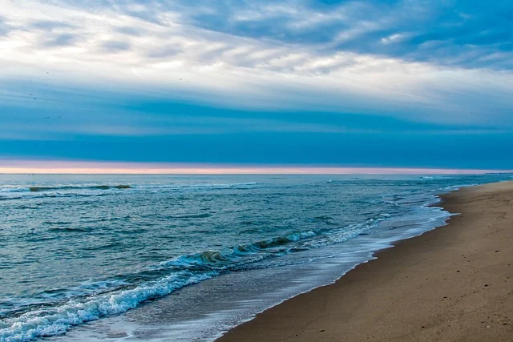

Bir damla yağmur, pencerenize çarpmadan binlerce kilometre önce yolculuğuna okyanusun yüzeyinde başladı. Güneş onu buharlaştırdı, rüzgar taşıdı, atmosfer soğuttu, tuz kristalleri veya toz tanecikleri etrafında yoğunlaştı ve yerçekimi geri getirdi. NASA Dünya Bilimleri verilerine göre okyanuslar, küresel buharlaşmanın yüzde 86'sını, küresel yağışın ise yüzde 78'ini sağlamaktadır. Bu, gezegenimizin en büyük su pompasıdır — ve bu pompanın bozulması, kasırgaları, muson yağmurlarını ve iklim dengesini derinden sarstığı gibi milyarlarca insanın yaşam koşullarını da değiştirebilir.
Su Döngüsü: Gezegenin Sonsuz Dolaşımı
NOAA'nın tanımıyla su döngüsü — ya da hidrolojik döngü — suyun katı, sıvı ve gaz halleri arasında sürekli dönüşüm yaptığı, Dünya yüzeyi ile atmosferi arasında kesintisiz dolaşan küresel bir sistemdir. Bu döngü güneş enerjisiyle çalışır ve yerçekimiyle dengelenir.
🌊 Su Döngüsünün Temel Rakamları — NASA & NOAA Güncel Verileri
- Dünya'nın toplam suyunun %97'si okyanuslarda; yalnızca %2,5'i tatlı su
- Küresel buharlaşmanın %86'sı okyanuslardan gerçekleşiyor (NASA GPM)
- Küresel yağışın %78'i doğrudan okyanus üzerine düşüyor (NASA GPM)
- Kalan %14 buharlaşma karalardan: toprak, iç sular ve bitkilerden terleme (transpiration) yoluyla
- Okyanuslardan yıllık ortalama buharlaşma: ~114 cm (45 inç) (NOAA JetStream)
- Okyanus buharlaşmasının %90'ı tekrar doğrudan denize yağış olarak geri dönüyor
- Atmosferdeki bir su damlası ortalama 9 gün içinde yere düşüyor
- Okyanus yüzeyindeki bir su molekülü atmosfere geçmeden önce ortalama 3.000 yıl denizde kalıyor
- Atmosfer, Dünya'nın toplam suyunun yalnızca binde birini içeriyor
Su Döngüsünün Süreçleri
Buharlaşma (Evaporation): Güneş enerjisi okyanusun yüzeyindeki su moleküllerine çarparak onları sıvı halden gaz haline geçirir. Bu süreçte su molekülleri ısıyı kendileriyle birlikte atmosfere taşır — bu nedenle okyanusların yüzeyi serinler. NASA'nın açıkladığı üzere okyanus yüzeyinden buharlaşma, sıcak ve bulut az olan subtropikal denizlerde en yoğun şekilde gerçekleşir; kış fırtınalarının sert rüzgarları etkisiyle kıta doğu kıyılarında da yüksek oranlara ulaşır.
Terleme (Transpiration): Bitkiler kökleriyle topraktan emdiği suyun yüzde 99'unu yaprak altındaki stomalı gözenekler aracılığıyla atmosfere bırakır. Bir hektar mısır tarlası günde yaklaşık 15.000 litre suyu atmosfere gönderebilir. Tropik yağmur ormanları ise bu süreçle kendi yağmurlarının önemli bir bölümünü kendileri üretir.
Yoğuşma (Condensation): Nem yüklü hava yükseldikçe soğur. Soğuyan hava artık aynı miktarda su buharını tutamaz; fazlası küçük partiküllerin — tuz kristalleri, toz, volkanik kül veya bakteriler — çevresinde sıvı damlaları ya da buz kristalleri olarak yoğuşur. NASA'nın tanımıyla bu partiküller "bulut yoğuşma çekirdekleri" (cloud condensation nuclei) işlevi görür; bunlar olmadan bulut oluşumu çok daha zorlaşır.
Yağış (Precipitation): Bulut içindeki su damlaları veya buz kristalleri büyüdükçe ağırlaşır ve havada asılı kalamazlar. Yağmur, kar, dolu veya çiseleme olarak yüzeye dönerler. UCAR'ın verilerine göre atmosferdeki bir su damlası yere düşmeden önce yalnızca ortalama 9 gün atmosferde kalır.
Bulutlar Nasıl Oluşur? Kimya ve Fizik
Bulutlar, görünmez su buharının görünür hale geldiği andır. NASA'nın çocuklara yönelik bilim sayfasında anlatıldığı üzere bu süreç şu şekilde işler: Okyanus, göl veya nehirden buharlaşan su molekülleri atmosferin alt katmanına (troposfer) girer. Yükselen hava akıntıları bu buharı daha soğuk olan üst atmosfere taşır. Soğuyan havanın tutabileceği su miktarı azaldığında, buhar "doyma noktasını" (saturation point) aşar ve yoğuşmak zorunda kalır.
Ancak yoğuşmanın gerçekleşmesi için yalnızca soğuk hava yetmez; bir çekirdek gereklidir. Deniz spreyi tuz kristalleri, Sahara'dan taşınan çöl tozu, orman yangınlarının isi, volkanik kül hatta bazı bakteriler bu görevi üstlenir. Okyanus yüzeyindeki kırılan dalgaların havaya kattığı tuz partikülleri, denizel bulutların en önemli yoğuşma çekirdeklerini oluşturur. Bu nedenle deniz üzerindeki bulutlar, iç kesimlere göre farklı bir kimyasal bileşime sahiptir.
⛅ Başlıca Bulut Türleri ve Özellikleri
| Bulut Türü | Yükseklik | Özellik | Yağış |
|---|---|---|---|
| Kümülonimbus | 200 m – 12 km | Kasırga ve fırtına bulutu; troposferden stratosfere uzanabilir | ⚡ ⛈️ Yoğun yağmur, dolu, şimşek |
| Kümülüs | 600 m – 2 km | Güzel hava bulutu; yassı taban, kabarık üst | Genellikle yok |
| Stratus | 0 – 2 km | Tabakamsı, gri; sis gibi yaygın katman | Hafif çiseleme |
| Nimbostratus | 500 m – 3 km | Karanlık, geniş yağış bulutları | 🌧️ Sürekli yağmur / kar |
| Altostratüs | 2 – 6 km | Grimsi, yarı saydam tabaka | Hafif yağmur |
| Sirrus | 6 – 12 km | Buz kristallerinden oluşur; ince, tüy gibi | Yok (buz kristalleri buharlaşır) |
| Sedef Bulutu (Nakreous) | 15 – 25 km | Stratosfer bulutu; nadir, sedef rengi; ozon yıkımı ile ilişkili | Yok |
Yağmur Nasıl Oluşur? Adım Adım Reaksiyon Zinciri
Bir bulut içinde su damlacıkları başlangıçta yalnızca birkaç mikrometre çapındadır — insan saçının yüzde biri kadar ince. Bu boyut havada asılı kalmak için yeterlidir. Ancak bulut içinde damlacıklar sürekli birbiriyle çarpışır ve birleşir; bu süreç birleşme (coalescence) olarak adlandırılır. Damlacık 100 mikrometreyi aştığında ağırlığı yükselen hava akıntısına direnç gösteremez hâle gelir ve yere doğru düşmeye başlar.
Soğuk (karma fazlı) bulutlarda süreç biraz farklıdır: Buz kristalleri, sıvı damlacıklardan çok daha hızlı büyür — çünkü buz, sıvı su üzerine göre daha düşük buhar basıncına sahiptir. Bu mekanizmaya Bergeron-Findeisen süreci adı verilir; dünyadaki yağmurların büyük bölümü başlangıçta buz olarak oluşur ve yere düşerken erir.
Yağmur damlası düşerken de biçimini değiştirir: Çapı 2 mm'den büyük damlaların altı düzleşir, üstü ise kabarık kalır — tam tersi sandığımız "gözyaşı" şeklini almaz. 4 mm'yi geçen büyük damlalar çarpışmalarla parçalanır ve yüzlerce küçük damlaya bölünür.
Okyanusun Su Döngüsündeki Merkezi Rolü
NOAA Ocean Today'in aktardığına göre Dünya'nın toplam suyunun yüzde 96'sından fazlası okyanuslardadır. Bu da su döngüsünü, özünde okyanus-atmosfer etkileşiminin yönettiği bir sistem haline getirir.
NASA'nın Dünya Bilimleri bölümüne göre okyanus yüzeyinden gerçekleşen buharlaşma, yüzeyi soğutarak sıcaklığı dengeler; buna karşılık buharlaşan su molekülleri büyük miktarlarda gizli ısı (latent heat) taşır. Bu ısı atmosfere karışır ve dünyanın sera etkisini dengeleyen önemli bir termal düzenleyici olarak işlev görür. NASA, okyanusların artan CO₂ nedeniyle ısınan atmosferden ısıyı emen ve depolayan "tampon bölge" olduğunu vurguluyor; NOAA Climate.gov verilerine göre okyanuslar, sanayi devrimi bu yana antropojenik CO₂ salımının yaklaşık yüzde 30'unu emmiştir.
"Okyanus, Dünya'nın iklimini düzenler; atmosfere saldığı ısıyı emer, CO₂'yi depolar ve su döngüsünü besler. Okyanus olmadan bu gezegen yaşanabilir olmayacaktı."
Okyanus Yüzeyi Tuzluluğu ve Su Döngüsü
Buharlaşma gerçekleştikçe saf su atmosfere yükselir, geride ise tuz kalır. Bu, buharlaşmanın yoğun olduğu bölgelerde deniz suyunun daha tuzlu olmasına yol açar. NASA'nın Aquarius ve ardından SMAP uydularıyla yürütülen araştırmalar, okyanus yüzey tuzluluğunu izleyerek su döngüsünün yoğunluğunu ve değişimini ölçebilmektedir. Bu verilere göre küresel ısınmayla birlikte tuzlu bölgeler daha tuzlu, tatlı bölgeler daha tatlı hâle geliyor — bu da döngünün giderek yoğunlaştığına işaret ediyor.
Termohalin Sirkülasyon: Okyanusun Küresel Taşıyıcı Bandı
Su döngüsü yalnızca buharlaşma-yağış ekseninde işlemez. Okyanusların derinlerinde, binlerce kilometre uzunluğunda dev akıntılar ısıyı, tuzluluğu, oksijeni ve besinleri gezegenin dört bir yanına taşır. Bu sisteme termohalin sirkülasyon (thermohaline circulation) adı verilir — "thermo" sıcaklık, "haline" ise tuzluluk anlamına gelir.
Kuzey Atlantik'te soğuyan ve daha tuzlu hale gelen yüzey suyu yoğunlaşır ve 4.000 metreye kadar dibe batar. Bu batma hareketi, güneyin ılık suyunu kuzeye taşıyan Atlantik Merisel Döngüsünü (AMOC) harekete geçirir. Science Times'ın Mart 2026 tarihli analizine göre bu sirkülasyon, Batı Avrupa'nın sıcaklığını diğer aynı enleme sahip bölgelerden 5–15°C daha yüksek tutmaktadır. Kuzey Fransa ile Kanada'nın aynı enlemde olduğu düşünüldüğünde, bu fark hayati önem taşır.
Nature Geoscience'da 2025 yılında yayımlanan bir çalışmaya göre AMOC, çok yüksek emisyon senaryosunda bile 2100'e kadar yüzde 18–43 oranında zayıflayabilir. Bu yavaşlama; Avrupa'yı 3–5°C soğutabilir, Sahel ve Amazon'un yağış düzenlerini bozabilir ve küresel deniz seviyesini bölgesel olarak yükseltebilir.
🌊 Termohalin Sirkülasyon'un Küresel Etkileri — ScienceTimes, Mart 2026
- Isı dağılımı: Tropikal ısıyı kutuplara, soğuk dip suyunu ekvatora taşıyarak küresel sıcaklığı dengeler
- Avrupa iklimi: Gulf Stream-Kuzey Atlantik Akıntısı Batı Avrupa'yı 5–15°C daha sıcak tutuyor
- Karbon depolama: Sirkülasyon, antropojenik CO₂'nin %25'ini okyanus derinliklerine taşıyor; böylece atmosferdeki miktarı sınırlıyor
- Besin döngüsü: Derin deniz besinlerini yüzeye çıkararak okyanus biyolojik çeşitliliğini ve balık stoklarını besliyor
- Yağış desenleri: Muson yağmurları, Amazon ve Sahel yağışları bu sirkülasyonla doğrudan bağlantılı
- İklim tehlikesi: AMOC zayıflaması Kuzey Avrupa'yı soğutabilir, Kuzey Amerika'da deniz seviyesini yükseltebilir
Kasırgalar: Okyanus-Atmosfer Etkileşiminin En Şiddetli Tezahürü
NESDIS (NOAA Uydu ve Bilgi Servisi) kasırgaları şöyle tanımlar: "Tropik siklonlar, ılık ve nemli havayı yakıt olarak kullanan motorlara benzer." Bir kasırganın oluşabilmesi için iki temel koşul gereklidir: Yüzey sıcaklığı en az 26,5°C (80°F) olan okyanus suyu ve derinliğinin en az 50 metre boyunca bu sıcaklığı koruması.
Kasırga Oluşumunun Adım Adım Süreçleri
1. Tropikal bozulma (Tropical Disturbance): Afrika kıyılarından esen alizé rüzgarları Atlantik üzerinden batıya doğru ilerlerken sıcak okyanus yüzeyinin üzerinden geçer. Su buharlaşır, hava ısınır ve yükselir; altta düşük basınç oluşur. Bu bölgeye çevredeki hava akar.
2. Tropikal depresyon: Düşük basınç merkezi güçlenirken Coriolis etkisi — Dünya'nın dönüşünden kaynaklanan sanal kuvvet — havanın spiral şeklinde dönmesine neden olur. Kuzey Yarımküre'de saat yönünün tersine, Güney Yarımküre'de saat yönünde. Merkezi rüzgar hızı 63 km/s'yi geçtiğinde sistem tropikal fırtınaya dönüşür; 119 km/s'yi aştığında ise kasırga (kategori 1) adını alır.
3. Geri besleme döngüsü: National Geographic'in aktardığına göre kasırga ılık su üzerinde hareket ettikçe daha fazla su buharı emer; bu buhar yoğuşarak daha fazla ısı salar; serbest kalan ısı fırtınanın merkezindeki düşük basıncı daha da düşürür; bu da daha şiddetli hava akışına ve daha yoğun buharlaşmaya yol açar. Kendini besleyen bu döngü kasırgayı büyütür.
4. Güçlenme ve zayıflama: Kasırga soğuk su üzerine geçtiğinde, kara üzerinde ya da güçlü dikey rüzgar kesme (wind shear) bölgesinde bu enerji beslemesi kesilir ve sistem çözülmeye başlar.
"Sıcak su tropikal fırtınalar için yakıt gibidir; su ne kadar sıcaksa yakıt o kadar güçlüdür. Gezegen ısındıkça bu yakıt daha potent hale geliyor."
2025–2026 Kasırga Sezonu Verileri
NOAA'nın 2025 Atlantik kasırga sezonu öngörüsüne göre sezon, ENSO-nötr koşullar, ortalama üzerinde okyanus sıcaklıkları ve zayıf rüzgar kesimi kombinasyonu nedeniyle normalin üzerinde aktif geçti. NOAA'nın açıkladığı üzere "yüksek ısı içeriği bulunan okyanus ve azalan alizé rüzgarları, Atlantik Havzası'nda yoğun bir yüksek aktivite döneminin sürmesine zemin hazırlıyor." 2025 sezonu için 17–25 isimli fırtına ve bunların 8–13'ünün kasırgaya dönüşmesi öngörüldü.
Ekim 2025'te Alaska'yı vuran eski Tayfun Halong vaka analizi de dikkat çekiciydi: arXiv'de yayımlanan araştırma, olağandışı derecede sıcak okyanus yüzey sıcaklıklarının sistemi yeniden güçlendirdiğini ve 1980'den bu yana Kuzey Pasifik'te tropik kökenli Arktik siklonların frekansının dört katına çıktığını ortaya koydu.
🌪️ Saffir-Simpson Kasırga Ölçeği — NOAA/NHC
| Kategori | Rüzgar Hızı | Hasar Düzeyi | Gerekli SST |
|---|---|---|---|
| Tropikal Fırtına | 63–118 km/s | Dal kırılması, taşkın riski | >26°C |
| Kategori 1 | 119–153 km/s | Çatı ve çevre hasarı | >26.5°C |
| Kategori 2 | 154–177 km/s | Ciddi yapı hasarı | >27°C |
| Kategori 3 | 178–208 km/s | Büyük yapı tahribatı | >28°C |
| Kategori 4 | 209–251 km/s | Yıkıcı; uzun süreli elektrik kesintisi | >28.5°C |
| Kategori 5 | >252 km/s | Felaket düzeyi; tahliye zorunlu | >29°C+ |
İklim Değişikliği Su Döngüsünü Nasıl Değiştiriyor?
NASA Dünya Bilimleri'nin değerlendirmesine göre bilim topluluğu, iklim değişikliğinin su döngüsü üzerindeki etkisi konusunda geniş bir uzlaşıya ulaşmıştır. Alt atmosfer ısındıkça buharlaşma hızlanır; bu da troposferdeki su buharı miktarını artırır. Daha fazla su buharı; hem daha yoğun yağış olayları hem de bazı bölgelerde daha derin kuraklıklar anlamına gelir. Etki bölgeye göre tam karşıt yönlerde tezahür edebilir.
NOAA'nın 1900–2002 dönemine ait kuraklık endeksi verileri bu dinamiği göstermektedir: Sahel, Güney Afrika ve Doğu Brezilya ağırlaşan kuraklıklar yaşarken Batı Rusya, Güneydoğu Güney Amerika ve İskandinavya daha az şiddetli kuraklık dönemleri geçirdi. NASA, atmosfer ısındıkça bu kutupsal ayrışmanın derinleşeceğini öngörmektedir.
Woods Hole Oceanographic Institution'ın aktardığı üzere, okyanus su döngüsü buharlaşmayı sağladığı için, bilim insanları okyanus tuzluluğundaki değişimleri takip ederek döngünün nasıl yoğunlaştığını izliyor. Yapılan ölçümler şunu gösteriyor: Tuzlu bölgeler daha tuzlu (yani daha fazla buharlaşma), tatlı bölgeler daha tatlı (yani daha fazla yağış) hâle geliyor. Bu, su döngüsünün küresel ısınmayla birlikte giderek hızlandığının somut kanıtıdır.
Kasırgalar açısından ise sıcaklık artışı doğrudan enerji artışı anlamına gelir. NatGeo'nun aktardığına göre NASA, kasırga oluşumu için gerekli minimum yüzey sıcaklığını 26°C olarak belirliyor. Okyanus yüzeyleri bu eşiği daha geniş coğrafyalarda ve daha uzun süre aşmaya başladığında, kasırga oluşum alanları genişleyebilir, yoğunlukları artabilir ve mevsimi uzayabilir.
📚 Bu Yazıda Başvurulan Kaynaklar
- NASA Science (Kasım 2025). The Water Cycle. science.nasa.gov
- NASA GPM Precipitation Education. NASA Earth Science: Water Cycle. gpm.nasa.gov — %86 buharlaşma ve %78 yağış rakamları
- NASA Science (Ekim 2024). Slowdown of the Motion of the Ocean. — AMOC ve termohalin sirkülasyon
- NASA Science (Eylül 2025). How Do Clouds Form? science.nasa.gov — yoğuşma çekirdekleri
- NOAA (güncel 2025). The Water Cycle. noaa.gov/education
- NOAA JetStream (Mart 2025). What a Cycle! — yıllık 114 cm okyanus buharlaşması
- NOAA Ocean Today. The Water Cycle. oceantoday.noaa.gov
- NOAA Climate.gov (Haziran 2025). Climate Change: Ocean Heat Content. — %30 CO₂ emilimi
- NOAA AOML (Temmuz 2025). 2025 Hurricane Field Program. — TC inflow ve yoğunlaşma araştırması
- NOAA (2025). NOAA predicts above-normal 2025 Atlantic hurricane season. noaa.gov
- NOAA Hydrologic Cycle. The Hydrologic Cycle. noaa.gov/jetstream
- NOAA NESDIS (Ağustos 2025). Water Cycle Activity Manual — JPSS Education.
- NOAA Ocean Exploration. How does the ocean affect hurricanes? oceanexplorer.noaa.gov
- National Geographic (Nisan 2025). How warm oceans supercharge deadly hurricanes. nationalgeographic.com
- Woods Hole Oceanographic Institution (güncel 2025). Water Cycle. whoi.edu
- UCAR Center for Science Education. The Water Cycle. — 9 günlük atmosfer kalış süresi
- ScienceTimes (Mart 2026). How Ocean Currents Regulate Earth's Climate: Thermohaline Circulation. — AMOC ve 5–15°C Avrupa etkisi
- Nature Geoscience (2025). AMOC limited weakening 18–43% by 2100. — CarbonBrief özeti
- arXiv (2026). Insights from Ex-Typhoon Halong (2025) — An Arctic Cyclone of Tropical Origin. — Dört kat artış
- J. Marine Sci. Res. Dev. (Ocak 2025). Currents of Change: The Role of Ocean Circulation in Global Climate. Yin X.
Sonuç: Her Damla Yağmur Bir Okyanusun Armağanıdır
Su döngüsü, en basit haliyle bir çevre gibi görünür: buharlaşma, bulut, yağmur, nehir, okyanus, tekrar. Ama bu döngünün içinde ısı ekonomisi, küresel taşıyıcı bantlar, kasırga dinamiği, karbon depolama ve iklim dengesi gibi muazzam süreçler iç içe çalışır. Yağmur yağdığında sizi ıslatan o damla, binlerce kilometre önce okyanusun yüzeyinden güneşin enerjisiyle koptu, atmosfer boyunca yolculuk etti ve deniz tuzu ya da kum tanesi etrafında kristalleşerek bugün başınıza düştü.
NOAA ve NASA'nın verilerinin ortaya koyduğu tablo açıktır: Bu sistem değişiyor. Okyanus ısınıyor, AMOC zayıflıyor, kasırgalar güçlenip daha geniş alanlara yayılıyor, bazı bölgeler daha fazla yağış alırken diğerleri kuruyor. Su döngüsünü anlamak, bu değişimin nereye gittiğini öngörmek ve milyarlarca insanın su, gıda ve iklim güvenliğini korumak için her zamankinden daha kritik bir öneme sahip.